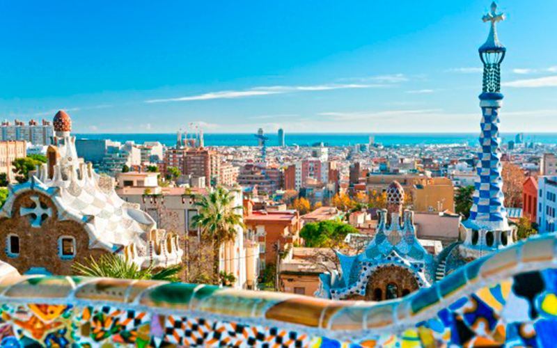

Barcelona
Barcelona, capital de Cataluña, es una ciudad que integra en sus paisajes barrios medievales y los más bellos ejemplos del Modernismo y las vanguardias del siglo XX. Se ha declarado Patrimonio de la Humanidad construcciones emblemáticas de arquitectos catalanes como Antoni Gaudí.